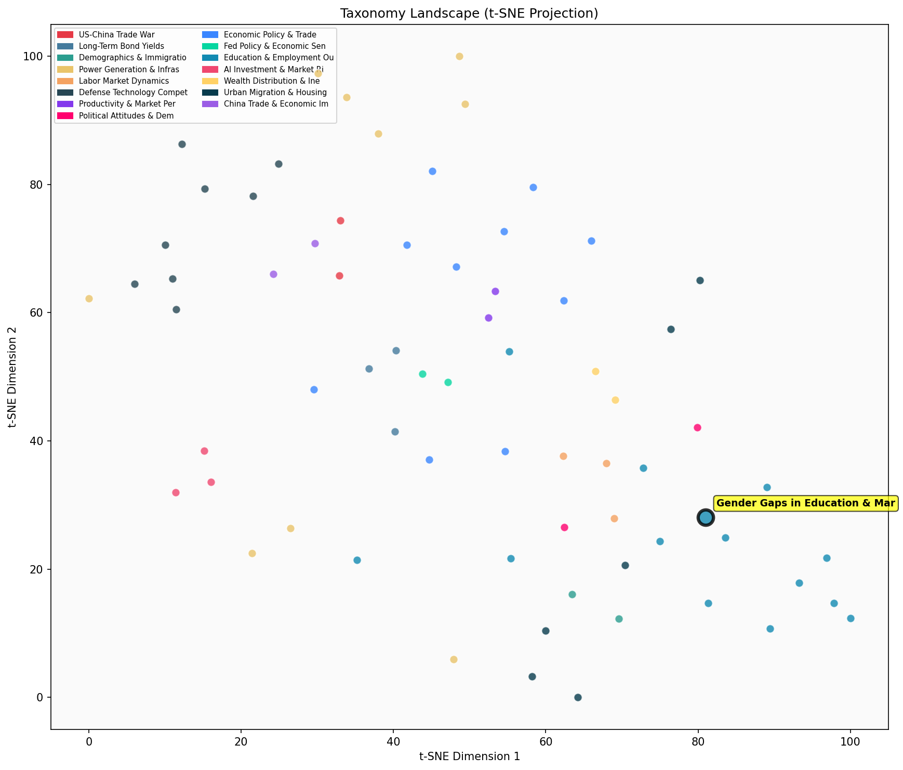

Description
This subcluster examines the intersection of educational attainment and romantic partnership patterns, focusing on how gender disparities in college completion affect marriage and dating markets. Articles analyze demographic trends using institutional data from sources like Bank of America, Danish administrative records, and longitudinal surveys spanning decades. The research reveals how educational sorting influences mate selection, with particular attention to declining marriage rates among non-college populations and changing gender dynamics in higher education. Unlike sibling clusters that focus on academic performance metrics or workplace wage premiums, this subcluster specifically explores how educational achievements translate into relationship outcomes and family formation patterns across different demographic groups.
Similarity to All 70 Subclusters
Each cell represents a subcluster. Color intensity shows similarity (blue=low, red=high). Black line marks current subcluster position.
Relationship to Primary Clusters
Average similarity to each of the 15 primary clusters. Larger area = stronger relationship to that cluster.
Taxonomy Landscape
All 70 subclusters positioned by similarity (t-SNE). Current subcluster highlighted with label. Click to enlarge.
Network Connections
Current subcluster at center, connected to related subclusters. Line thickness = similarity strength.
Most Representative Articles
-
1. The rise in female college enrollment from 1930-80 hasn’t reduced marriage rates for college women.
-
2. White women’s graduation rate rose 10pp more than white men’s btw the 1960 and 1980 cohorts. Returns
-
3. Higher earnings among married men led to a decline in their spouses' workforce participation, a tren
-
4. The bulk of the decline in the gender gap among full-time college educated workers born btw the 1931
-
5. Phil Gramm and John Early note that the "Gender Pay Gap" is largely driven by female preference for
Edge Cases (Boundary Articles)
-
1. According to @TheEconomist’s "cost of loving index," a night out in NYC starting with drinks at a swThis article is borderline because while it discusses dating/romantic activities (the "cost of loving" for a night out), it focuses purely on economic aspects of dating rather than examining how gender gaps in education affect marriage and partnership patterns. The content is more about consumer economics and cost of living than the educational-marital outcome relationships that define the cluster's core theme.
-
2. Happy Valentine's Day! @EdwardConard explains the optimal process for finding love, "sequential seleThis article is borderline because while it mentions "finding love" and romantic selection processes that could relate to marriage outcomes, it appears to be about general dating advice or economic theories of mate selection rather than specifically examining gender disparities in education and how they affect marriage markets. The content seems more focused on optimization strategies (which aligns with the alternative "Management & Performance Analysis" cluster) rather than analyzing educational gender gaps and their impact on romantic partnerships.
-
3. .@TheEconomist examines data from an American dating site aimed at educated professionals. They finThis article is borderline because while it touches on dating preferences among educated professionals, it focuses primarily on general dating behavior patterns rather than specifically examining how gender gaps in educational attainment affect marriage and relationship outcomes. The article appears to be more about dating site user behavior and traditional preferences rather than the educational gender disparities and their impact on partnership patterns that define the cluster's core theme.
Original Dendrogram